| Inspecting the state of the Repository | ||
|---|---|---|
|
|
|
|
| Working with remote Repositories | Committing Changes | |
Label decorations show Git specific information on resources under Git version control. They appear in all views showing model objects, like Package Explorer, Project Explorer, Navigator, Hierarchy View.
The Git label decorations can be switched on globally in the Preference Menu ( Window > Preferences) under General > Appearance > Label Decorations.
More detailed settings can be done in the Preferences under Team > Git > Label Decorations.
There are two different types of label decorations: text decorations and icon decorations.
Text decorations appear on the left or right side of the text label. They can be configured on the Preferences dialog under Team > Git > Label Decorations on the tab Text Decorations. For example, the default for a dirty resource is a > on the left side of its name.
These are the default settings:
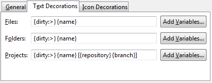
For files and folders there are the variables "name", "dirty" and "staged". "Dirty" and "staged" are flags; if they are true, the text after the colon is displayed.
For projects there are the additional variables "repository" and "branch". The "repository" variable displays the name of the repository.
The "branch" variable displays the name of the currently checked out branch. If no branch is checked out, the decoration shows the shortened name of the commit (first seven characters followed by ellipsis). If tags and/or remote branches are pointing to this commit, a "best guess" heuristic is applied to also show this information: tags take precedence over remote branches, if several tags apply, the newest one is displayed; if there are several remote branches or tags have no modification date, then alphabetic sorting is applied and the last one is shown. Example: the checked out commit
e49f576... refers to tag
v.0.7.1 of repository
egit:
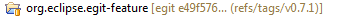
Icon decorations appear on the lower right corner of the icon displayed in front of the label. They can be configured on the Preferences dialog under Team > Git > Label Decorations on the tab Icon Decorations.
These are the default decorations:
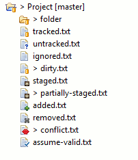
The History View displays the the history of the files versioned in a Git repository. To open the History View select Show In > History View from the context menu on any resource under Git version control.
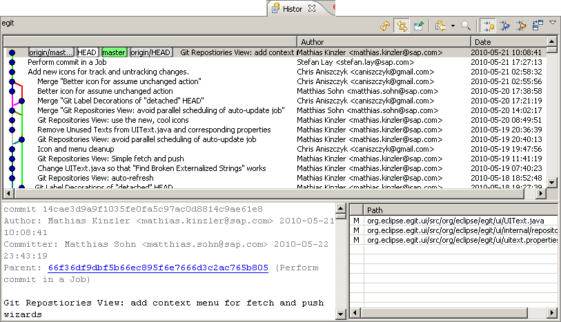
The top level pane is the commit graph displaying the commit log in reverse chronological order (newest commit on top).

The lower two panes show the details of the selected commit. In the lower right pane the files affected by the commit are listed.
The letter in the first column of this table describes the nature of the change for this file:
In the lower left pane the commit message and some of its metadata and the git diff for the affected files are listed.
The toggle buttons in the the view toolbar control how the displayed commits are filtered with respect to the context set by the resource selected in e.g. the Navigator or Package Explorer view:

If none of the toggle buttons is down the commit log is filtered to show only commits which affected the selected resource.
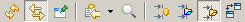
If the right-most toggle is down the commit log is filtered to show all commits which affected any of the resources in the selected resource's parent folder.
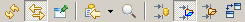
If the middle toggle is down the commit log is filtered to show all commits which affected any of the resources in the selected resource's project.
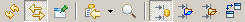
If the left toggle is down the commit log is not filtered and shows all commits reachable from the currently checked out branch.
When the toggle button with the magnifying glass is down a search bar is displayed which allows to search for commits in the commit log:
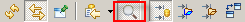
Depending on the setting in the drop-down list in the search bar the commit's title, comments, author or committer are searched.
The found search hits are high-lighted in bold and the "next" and "previous" buttons allow to jump to the next or previous commit matching the search criteria.
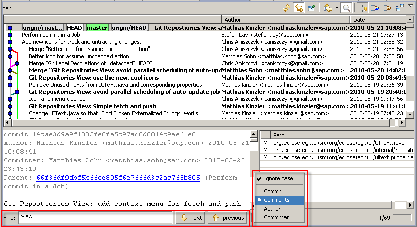
The configuration drop-down menu in the view's toolbar allows to change formatting rules for the commit message and controls if the lower two panes of the History View should be displayed:
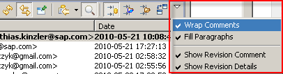
A summary of the status of all modified tracked files is displayed on the commit dialog. By double clicking a file the changes to be committed will be displayed in a compare dialog. As EGit currently always commits the content of the working tree (corresponding to git commit -a on the command line) the compare dialog will compare the working tree with the last commit.
In daily work you will often want to see the changes between your last commit, the index, and the current working tree.
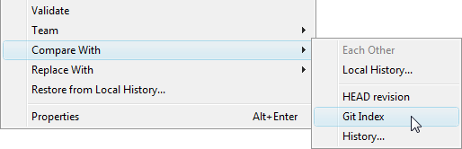
Currently a compare dialog can only be opened for a single selected file.
The difference between a file in the current working directory and in the last commit in the current branch can be viewed from the context menu "Compare With" -> "HEAD revision". This feature is also available in the Commit dialog. Double clicking on an entry in the Commit dialog opens a compare dialog.
The difference between a file in the current working directory and in the index can be viewed from the context menu Compare With > Git Index.
This feature is not implemented yet.
Instead of using a compare editor you can enable quick diff support and see the changes within the text editor.
This feature can be enabled via the
General > Editors > Text Editors > Quick Diff preference page:
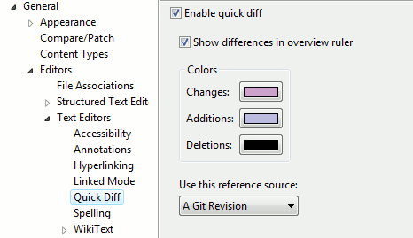
The difference annotation will then be displayed on the left hand side of the editor:
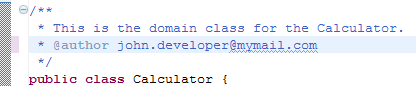
If you move your mouse over the annotation you see the content of the version you are comparing to:
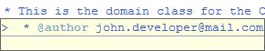
Per default, the comparison is against the HEAD. You can determine the version you are comparing to, the so-called quickdiff baseline, from the context menu of a commit in the history view ( Show in > History). There are three menu entries:
To display the diff for a given commit
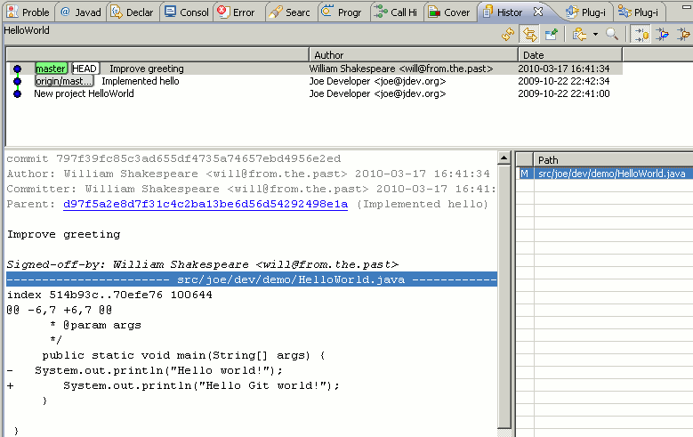
|
|

|
|
| Working with remote Repositories | Committing Changes |